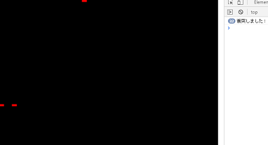
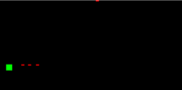

javascriptでシューティングゲームみたいなものを作る③
こんにちはrihitoです。javascriptでシューティングゲームみたいなものを作る第三回目です。
動機
暇だから対象読者
・javascriptをある程度できる人・ゲームを作りたい人
・暇な人
・とりあえず何かしたい人
今回は、当たり判定を実装していきたいと思います
記事
javascriptでシューティングゲームみたいなものを作る①javascriptでシューティングゲームみたいなものを作る②
今回のソースコード
enemyとレーザーの当たり判定
playerのレーザーに当たるようにenemyの座標を変更します。main.js 13行目~
//enemyの座標 var ex = [100]; var ey = [100];main.js 38行目~
ctx.rect(ex[i],ey[i],12,12)まず、当たり判定をするにはどのようにしたら良いのでしょうか？
当たり判定をするには、このようなことが考えられます。
なぜ、このようになったのでしょうか?
それはこの画像を見たらわかると思います。

というわけで上で示したことをコードに書き下ろしていきたいと思います。
main.js 44行目~
function l_collision(){
for(var i = 0;i < lx.length;i++){
for(var j = 0;j < ex.length;j++){
if(ey[j] + 12 > ly[i]&& ex[j] + 12 >lx[i] &&ey[j] < ly[i]+2&& ex[j] <lx[i]+5){
console.log("衝突しました!")
}
}
}
}
main.js 80行目~
l_collision()
chromeの場合consoleを表示するには、Cnrl+Shift+Iキー。または、●が縦に連なっているメニューボタン>>そのほかのツール>>デベロッパーツール
で確認することができます。

では、今度はレーザーと衝突したenemyを削除するプログラムを書いてみましょう。
main.js 44行目~
function l_collision(){
var collision = false //衝突したか
var collision_n = 0 //衝突したenemyの個体番号
for(var i = 0;i < lx.length;i++){
for(var j = 0;j < ex.length;j++){
if(ey[j] + 12 > ly[i]&& ex[j] + 12 >lx[i] &&ey[j] < ly[i]+2&& ex[j] <lx[i]+5){
console.log("衝突しました!")
collision = true
collision_n = j //個体番号を衝突した個体番号にする
}
}
}
return [collision,collision_n]
}
main.js 85行目~
var l_return = l_collision() //衝突した個体番号などをl_returnに収納
if(l_return[0]){
//ぶつかった個体を削除する(リストから削除する)
ex.splice(l_return[1],1)
ey.splice(l_return[1],1)
}
ちなみに～.splice()は、リストの要素を削除するときに使う関数で、
こんな感じで使います。
/*リスト名*/.splice(/*削除はじめの位置*/,/*削除する要素の数*/)というわけで
今回のコード
<!DOCTYPE html>
<html>
<body>
<canvas id="main" style="height:400px;width:800px;background:#000000"></canvas>
<!--canvasの下にscriptを読み込まないとエラーがでる-->
<script src="main.js"></script>
</body>
</html>
var canvas = document.getElementById("main");//canvasを読み込む
var ctx = canvas.getContext("2d");
var px = 10 //player x座標
var py = 120 //player y座標
var p_dx = 0 //player xの速さ
var p_dy = 0 //player yの速さ
//レーザーの座標
var lx =[0]; //レーザーをたくさん描けるようにするためリストにする
var ly = [0];
//enemyの座標
var ex = [200];
var ey = [100];
//playerを描く関数
function player_draw(){
ctx.beginPath()
ctx.rect(px,py,10,10)
ctx.fillStyle = "#00ff00"
ctx.fill()
ctx.closePath()
}
function l_draw(){
for(var i = 0;i < lx.length;i++){
ctx.beginPath()
ctx.rect(lx[i],ly[i],5,2)
ctx.fillStyle = "#ff0000"
ctx.fill()
ctx.closePath()
}
}
function e_draw(){
for(var i = 0;i < lx.length;i++){
ctx.beginPath()
ctx.rect(ex[i],ey[i],12,12)
ctx.fillStyle="#ff00ff"
ctx.fill()
ctx.closePath()
}
}
function l_collision(){
var collision = false //衝突したか
var collision_n = 0 //衝突したenemyの個体番号
for(var i = 0;i < lx.length;i++){
for(var j = 0;j < ex.length;j++){
if(ey[j] + 12 > ly[i]&& ex[j] + 12 >lx[i] &&ey[j] < ly[i]+2&& ex[j] < lx[i]+5){
console.log("衝突しました!")
collision = true
collision_n = j //個体番号を衝突した個体番号にする
}
}
}
return [collision,collision_n]
}
//キーが押されたときに実行される
document.onkeydown = function(e){
if(e.key == "ArrowUp"){ //↑
p_dx = 0
p_dy = -1
}
if(e.key == "ArrowDown"){//↓
p_dx = 0
p_dy = 1
}
if(e.key == " "){
lx.push(px) //レーザー発射開始位置(playerの位置)をリストに追加
ly.push(py)
}
}
//キーが離されたときに実行される
document.onkeyup = function(e){
p_dx = 0 //止める
p_dy = 0
}
function draw(){
ctx.clearRect(0/*開始地点*/,0,canvas.width/*終了地点*/,canvas.height) //canvasをいったんクリアする
player_draw()
l_draw()
e_draw()
var l_return = l_collision() //衝突した個体番号などをl_returnに収納
if(l_return[0]){
//ぶつかった個体を削除する(リストから削除する)
ex.splice(l_return[1],1)
ey.splice(l_return[1],1)
}
for(var i = 0;i < lx.length/*リストの長さ*/;i++){ //リストを読み込む
lx[i] += 1 //今読み込んでいるレーザーを動かす
}
e_draw()
for(var i = 0;i < ex.length/*リストの長さ*/;i++){ //リストを読み込む
ex[i] -= 1 //今読み込んでいるenemyを動かす
}
//playerを動かす
px += p_dx
py += p_dy
}
setInterval(draw,10) //10ミリ秒単位で実行
draw();